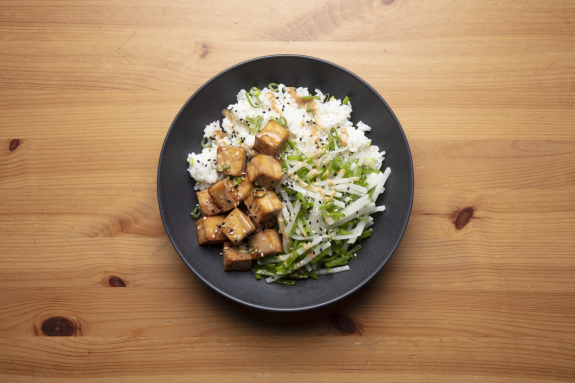

Glazed Tofu Rice Bowls
With Wilted Bok Choy & Quick-Pickled Cucumbers

Description
Approach this tofu as you would a blank canvas. The artful process starts
with a coating of cornstarch and aromatics, before baking the cubes to crispy.
Next, colour your would by applying a glaze of soy and honey for a slick finish.
Use rice vinegar to liven up the white rice and to pickle rounds of cucmbers in a
matter of minutes. This work of art comes together with just-wilted bok choy, beautifully
framed in a bowl.
Ingredients
- 1 Garlic Clove
- 2 Cucumbers
- 1 Shallot
- 340g Baby Bok Choy
- 1 Block of Tofu (non-GMO)
- 165g White Rice
- 30 ml Rice Vinegar
- 14g Honey
- 30ml Soy Sauce
- 36g cornstarch
- 8.5g Nori & Lemongrass spices
Steps
- Preheat the oven to 450°F. Place the rice in a strainer and rinse under cold water,
agitating the rice with your hands for 1 minute, until the water runs clear.
In a medium pot, combine the rice, 1 ¼ cups water (double for 4 portions)
and a big pinch of salt; bring to a boil. Reduce the heat, cover and simmer,
18 to 20 minutes, until the rice is tender and the water has been absorbed.
Remove from the heat and let sit, covered, for 5 minutes. Fluff the cooked
rice with a fork and set aside in a warm spot.
-
While the rice cooks, cut the tofu into medium cubes. In a large bowl,
combine the soy sauce, ½ the hoisin and ½ the rice vinegar. Add the tofu
and toss to coat evenly. Set aside to marinate while you prepare the next step.
-
While the tofu marinates, peel and julienne the daikon. Snap off and discard
the stem ends of the snow peas; pull off and discard the tough string that runs
the length of each pod. Thinly slice the snow peas crosswise on an angle. Cut off
and discard the root ends of the scallions; thinly slice, separating the white bottoms and green tops.
-
On a lined sheet pan, arrange the marinated tofu (letting the excess marinade drip off) in a single,
even layer. Reserve the remaining marinade. Transfer the tofu to the oven and roast, 12 to 14 minutes,
until browned, stirring and adding the reserved marinade halfway through.
-
While the tofu roasts, in a large bowl, combine the daikon, snow peas, up to ½ of the green tops of
scallions (to taste), the remaining rice vinegar and a drizzle of oil; season with S&P to taste. In
a small bowl, combine the mayonnaise and remaining hoisin sauce; season with S&P to taste.
-
To the pot of rice, add ½ the sesame seeds and as many white bottoms of scallions as you’d like;
stir to combine. Divide the finished rice, tofu and salad between your bowls, side by side. Garnish
with a drizzle of the hoisin mayo, the remaining sesame seeds and as many remaining green tops of the
scallions as you’d like. Bon appétit!